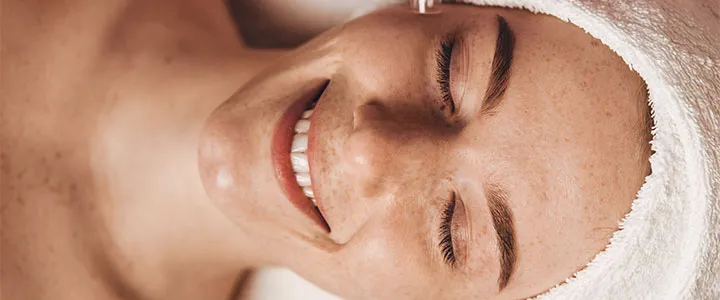

A limpeza de pele profissional remove impurezas, cravos, oleosidade excessiva e células mortas — deixando a pele renovada, respirando livremente e muito mais receptiva a outros tratamentos.
Agendar sessão
A limpeza de pele profissional vai muito além da rotina doméstica. Com técnicas e produtos específicos, remove impurezas profundas, cravos, oleosidade e células mortas que o skincare diário não alcança. O resultado é uma pele visivelmente mais limpa, uniforme e saudável.
Na Clínica Mônica Lunardon, o protocolo é adaptado ao tipo e às necessidades de cada pele — seja oleosa, seca, mista ou sensível — garantindo uma experiência segura e eficaz.
O cuidado essencial para manter a saúde e o brilho da sua pele.
Remove o acúmulo de células mortas que opacifica a pele, devolvendo luminosidade.
Extrai cravos e sebo acumulado, prevenindo espinhas e reduzindo os poros visivelmente.
Pele limpa absorve melhor os ativos dos cosméticos e tratamentos subsequentes.
Protocolo adaptado para peles oleosas, secas, mistas e sensíveis com segurança.
Agende sua sessão de limpeza de pele e sinta a diferença.
Falar no WhatsApp